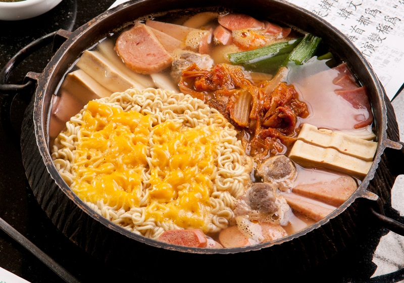
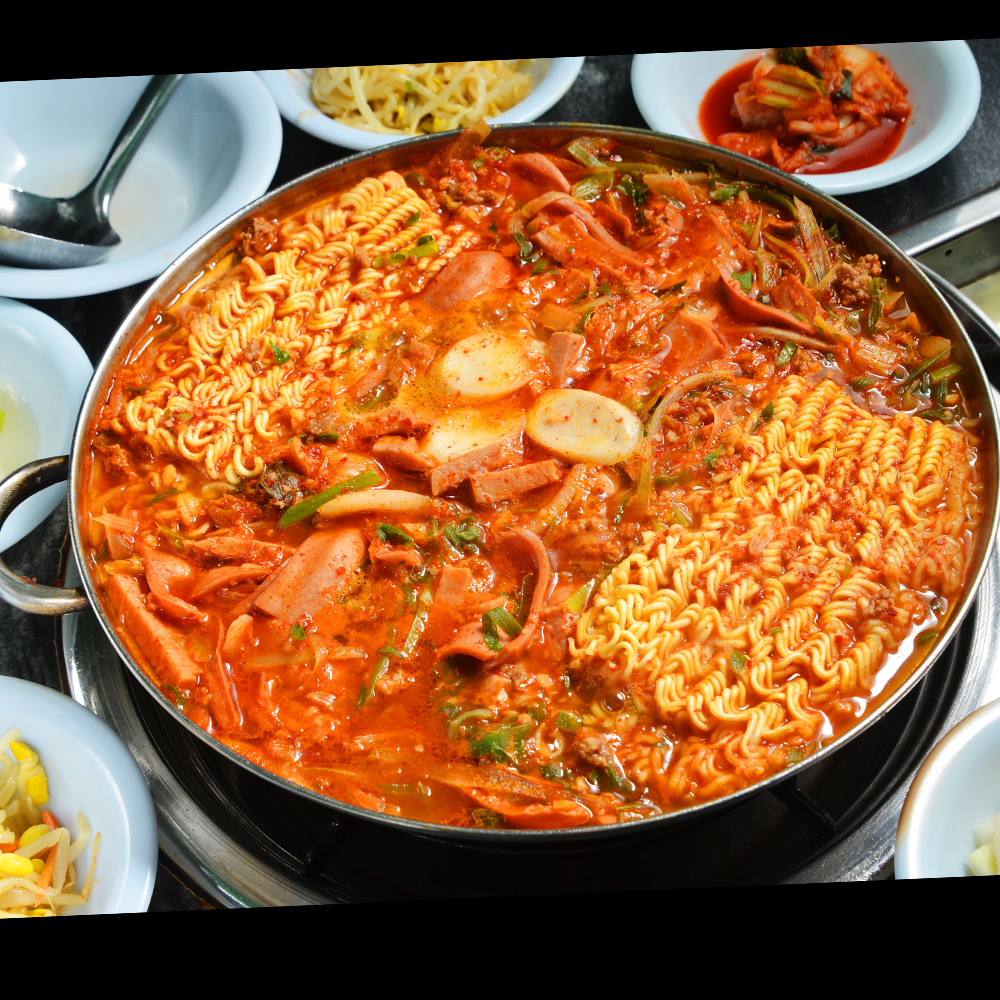

是一種類似西式雜鍋的韓國濃湯火鍋。
源於1950年代韓戰過後的議政府市。
韓式部隊鍋
由於戰爭導致物資短缺，美軍基地內剩餘的香腸、罐裝火腿及午餐肉、起司等食材
時至今日，部隊鍋在南韓仍很受歡迎，並加入很多現代食材（如即食麵）一起食用。
部隊鍋的其他材料還有泡菜、洋蔥、青蔥、焗豆、培根、起士片、拉麵、打糕等。


部隊鍋的別稱詹森湯（존슨탕, Johnson湯）是把美國德州參議員。
後來任總統的林登·詹森的姓氏和韓語的「湯」（탕）組合而成，
被附近居民拿來搭配辛辣的苦椒醬（一種辣的湯）作底，以解決無肉之苦，
時至今日，部隊鍋在南韓仍很受歡迎。